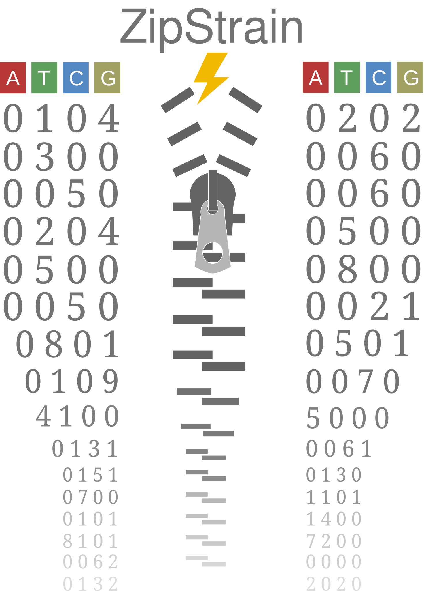

Welcome to ZipStrain

ZipStrain is a toolkit for strain-level metagenomic profiling and comparison. It is the spiritual successor to InStrain but with literally orders of magnitude increases in speed while using substantially less RAM.
Source code is available on GitHub
Publication is available on bioRxiv
See links to the left for installation instructions and tutorials
Bugs reports and feature requests can be submitted through GitHub
ZipStrain was developed by Parsa Ghadermazi in the Olm Lab at the University of Colorado Boulder.